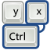

|  | Sleep Quirk Debugger |
Back to the main keymap page
You can check to see if your keyboard is already listed using the gitweb interface. You can see the very latest vendor files here:
If you click on any of the fdi files you'll find matches like this:
<match key="/org/freedesktop/Hal/devices/computer:system.hardware.vendor" prefix="LENOVO">
<match key="/org/freedesktop/Hal/devices/computer:smbios.system.version" contains="3000">
<append key="input.keymap.data" type="strlist">e016:wlan</append> <!-- Fn+F5 wireless -->
<append key="input.keymap.data" type="strlist">e017:sleep</append> <!-- Fn+F4 suspend -->
<append key="input.keymap.data" type="strlist">e018:suspend</append> <!-- Fn+F12 hibernate -->
<append key="info.capabilities" type="strlist">input.keymap</append>
</match>
</match>
So you can see the different quirks in operation.
Back to the main keymap page